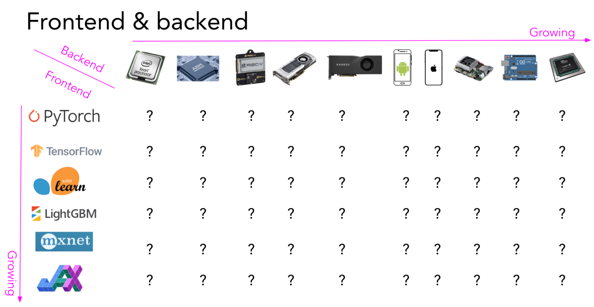
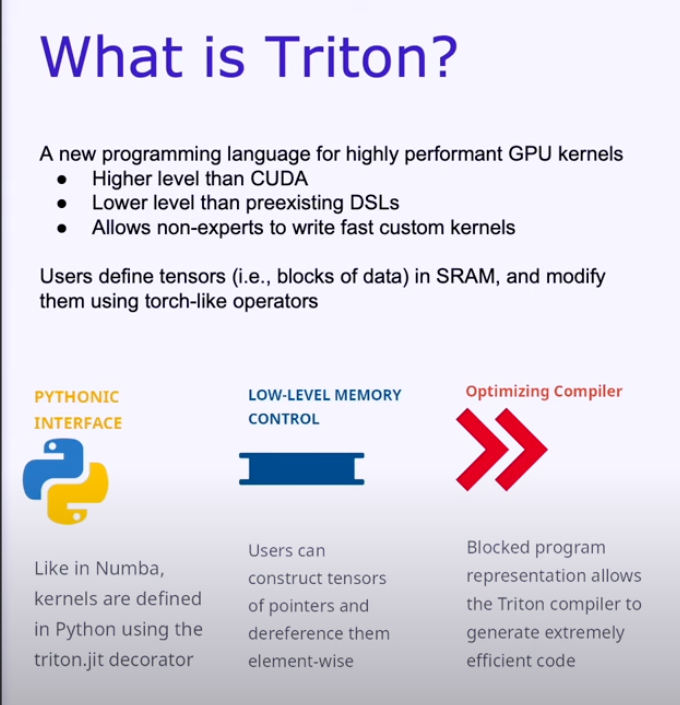

ML Serving
Types of Optimization
| Category | Notes/Examples |
|---|---|
| Hardware Upgrades | CPUs vs GPUs |
| Inference Servers | Batching requests, replica/worker management |
| Model Optimization | Quantization, pruning, distillation, flash attention |
| Compilers | Kernel fusion, hardware-specific optimization, portability (hardware & runtimes) |
This table is inspired by this talk where Mark Saurofim outlines categories of optimization relevant to model serving.
When considering model serving, the discussion tends to be focused on inference servers. However, one underrated topic is the importance ML compilers play (which is discussed in later sections).
Inference Servers
Below are the inference servers I would pay attention to. Nvidia Triton seems to be the most popular/robust according to ~20+ professionals I’ve spoken with.
- Torch Serve
- TFServe
- KServe
- Nvidia Triton
Here are detailed notes with code examples on inference servers I’ve explored. I explore two inference servers: TFServing and TorchServe, as well as a general-purpose REST API server for model serving with fastapi.
| Title | Description |
|---|---|
| TF Serving | TensorFlow Serving |
| TorchServe | Notes on TorchServe |
| FastAPI | Serving models with FastAPI |
ML Compilers
Why You Should Care About Compilers
From this blog post:
- Computing on edge devices can save you tons of money (and potentially complexity).
- Re-writing models to work on edge devices is costly b/c that requires specialists to execute – good compilers can make this easy or obviate that transition by helping you translate your high-level framework code into hardware-specific code.
- Sometimes, cloud computing is not an option (you have to run on a device).
- New types of architectures can perform very poorly on hardware without the right compilers, even when those models are significantly smaller and simpler than established models. One example is shared by Google researchers who tried to implement capsule networks.
- Translating framework code to various backend hardware is a non-trivial problem, as illustrated in the below graph (growing number of frameworks + hardware/devices):

Terminology
It’s easy to get lost in the terminology of compilers. Here are some terms that are important to understand:
- Kernel Fusion: this is the process of combining multiple operations into a single operation. For example, a convolution followed by a ReLU can be combined into a single operation.
- Intermediate Representation (IR): The IR is a representation of a model that’s independent of a framework like Pytorch. These IRs are often JSON, YAML, or a string that encodes model structure, weights, and so on. These IRs are eventually translated into programs that can be executed and are often optimized toward specific hardware.
- Graph Lowering: This is the process of translating one IR to another. For example, a model represented in the ONNX IR can be lowered to a model in TensorRT IR. The reason for doing this is to translate one IR to one that allows a specific compiler to perform domain/hardware-specific optimizations. Different compilers can optimize different types of things and offer different goals. For example, ONNX’s primary goal is to be a portable IR, while TensorRT’s primary goal is to optimize for inference. The reason it’s called Graph lowering is that a model be represented as a graph, and you “lower” the graph representation consecutively towards something that can be made into machine code. Compilers can process IRs in different phases such that the IR is simplified/optimized, that a back-end will use to generate machine code.
- Front-End: This refers to part of the Compiler Stack that translates a programming language into an IR.
- Back-End: This refers to part of the Compiler Stack that translates an IR into machine code. You can compose different front-ends with different back-ends through “middle-ends” that translate IRs from one to another (also known as “lowering” or “graph lowering”).
- Graph Breaks: When you represent a model as a graph via an intermediate representation (IR) there are pieces of code that might not fit into a graph form, like if/else statements. When this happens, you will have a graph break, where you will have to split your program into several graphs. Only the parts that can be represented as a graph can usually be optimized by the compiler. Depending on the framework you are using, either your or the framework will have to stitch all the graphs together in a way that represents the original program. Graph breaks usually incur a performance penalty, so it’s important to minimize them.
Common Sources of Confusion
The Compiler Stack
It can often be ambiguous when someone refers to a compiler if they are referring to a front-end that generates the IR, the back-end that generates/executes the code, or the entire compiler stack as a whole. For example, ONNX has both an intermediate representation IR and a runtime. The IR is a specification (a string) that allows you to represent a model in a way that’s independent of a framework. The ONNX Runtime is a backend that allows you to execute models represented by the ONNX IR on a variety of hardware and from various languages (Python, C++, Java, JS, etc.).
The term “compiler” is often overloaded. Understanding the context in which the term is used can be helpful for understanding documentation. For example, Torch Dynamo is a front-end (often referred to as a “graph acquisition tool”) that produces an IR. The user can then lower this IR to a back-end to another compiler stack like C++ (for CPUs) or OpenAI Triton (for GPUs) that eventually gets executed.
Nvidia vs OpenAI Triton
Triton by Nvidia is an inference server. Triton by OpenAI is a high-level CUDA programming language and compiler stack. The two are not related.
Training: TorchDyamo + JIT + Triton
Compilers are often thought of as optimizations for inference. However, there are compilers that help with training too. The most notable these days is TorchDynamo + JIT Compiler. TorchDynamo is a front-end that allows you to capture a PyTorch model as an IR1. Since this front-end is maintained by the Pytorch team, it is going to have the greatest support for Pytorch models. The best thing about the TorchDynamo+JIT stack is that it seamlessly handles graph breaks for you (stitches various subgraphs together for you, etc). The JIT compiler supplants the CPython interpreter that normally “eagerly” runs your PyTorch code for faster execution2. It works by dynamically modifying Python bytecode right before it is executed. All you have to do is to call one line of code: torch.compile(...) to see the benefits. Andrej Karpathy is using this in his NanoGPT tutorials:
This is so underrated! Ridiculous speedup by calling
— Hamel Husain (@HamelHusain) February 7, 2023torch.compile(...)
Code: https://t.co/9mMGGyEcfz
Related blog posts:
1. https://t.co/JOLZ8BQdet
2. https://t.co/ci8KAzLW1p (this blog by @marksaroufim is a real gem, BTW) https://t.co/E0oRVC4Ow8
The JIT Compiler can theoretically leverage different backends for execution, but at this time, the paved path is to use the TorchInductor which lowers the IR to the OpenAI Triton backend. So the entire “compiler stack” looks like this:
- TorchDynamo acquires a PyTorch model as an IR (FX graphs, multiple graphs if there are graph breaks)
- The JIT Compiler lowers the FX Graph (through other intermediate compiler stacks) to TorchInductor
- TorchInductor lowers the IR to OpenAI-Triton for GPU or C++ for CPU
- OpenAI Triton compiles the IR and executes it (perhaps by first passing it to some other back-end like CUDA)
That is a lot of steps! While the end-user doesn’t necessarily need to be aware of all these steps, the documentation on Torch Dynamo can be really confusing unless you are aware of these different things.
Notes on Specific Compiler Stacks
TensorRT
This is a compiler/execution environment. Unlike the JIT (just-in-time), it is an AOT (ahead-of-time) compiler. It is compatible with PyTorch via torch-TensorRT. From the docs: TensorRT’s primary means of importing a trained model from a framework is through the ONNX interchange format, so you need to convert your model to ONNX before getting to TensorRT (this happens automatically when you use torch-TensorRT).
ONNX
ONNX is mainly focused on portability. ONNX provides its own set of ops that are cross-platform and can be run on an ONNX Runtime. The ONNX runtime provides clients in many languages, like Python, C, C++, Java, JS, etc., allowing you to load a model for either inferencing or training. There are hardware-specific clients that are optimized for OS (i.e., Linux, Windows, Mac, etc.), Hardware acceleration (CUDA, CoreML) and so forth. You can select a client from here: https://onnxruntime.ai/.
You can construct your computation graphs with ONNX’s built-in ops; However, this is an impractical way to build a model. In practice, you want to use your favorite ML framework like PyTorch or Tensorflow and use a converter to convert that model to ONNX like torch.onnx
Pytorch Considerations
However, there is no free lunch. For PyTorch, there is a long list of limitations and gotchas where things can go wrong. You must be careful when exporting a model and should test the exported ONNX model against the native model for consistency. The exported model looks like a JSON file that describes the graph along with weights.
torch.onnx relies on TorchScript to export the model into an IR. You have to either use Tracing or Scripting depending upon the control flow in your model.
- Tracing: If there is no control flow (if statements, loops, etc.) then use Tracing. Tracing works by recording the model during execution. If you have dynamic elements in your graph, then they will be recorded as constants.
- Scripting: If there is control flow, you want to use Scripting instead.
- Mixed: if there are modules in your code that do not have control flow and others that do, you can compile these modules separately with either Tracing or Scripting and then combine them into a single model.
Read the TorchScript Tutorial and Tracing vs. Scripting to learn more.
Use Torch-TensorRT instead of ONNX
I talked to a trusted source on the Pytorch team, and they said that TorchScript is not actively maintained and that I should look at pytorch - TensorRT instead.
OpenAI Triton
Only for GPUs, rrom this talk:

ApacheTVM
ApacheTVM is a compiler that seems to have one of the widest ranges of hardware support.
Adaptive Compilers (TVM)
autoTVM, part of ApacheTVM compiler framework are part of a class of compilers that are adaptive that run tests on hardware and automatically try to optimize it for the hardware by trying many different graph configurations. From Chip’s intro to compilers:
autoTVM measures the actual time it takes to run each path it goes down, which gives it ground truth data to train a cost model to predict how long a future path will take. The pro of this approach is that because the model is trained using the data generated during runtime, it can adapt to any type of hardware it runs on. The con is that it takes more time for the cost model to start improving.
One example is when Apple released their M1 chips in Nov 2020. M1 is an ARM-based system on a chip, and ARM architectures are more or less well-understood. However, M1 still has a lot of novel components of its ARM implementation and requires significant optimization to make various ML models run fast on it. A month after the release, folks at OctoML showed that the optimization made by autoTVM is almost 30% faster than hand-designed optimization by Apple’s Core ML team.
Quote from a compiler expert:
Pros of dynamic compilers is that we maximize performance across a broader set of models/ops. Downside of dynamic compilers is search time. AutoTVM generally takes hours, even more than a day to compile because it’s trying every possible combination.
ML can also be used to optimize the computation graph, or “ML is optimizing ML”. Below is an illustration from Chen, et.al; TVM: An Automated End-to-End Optimizing Compiler for Deep Learning, where they comment that:
Possible optimizations form a large space, so we use an ML-based cost model to find optimized operators.
Adaptive compilers are interesting because they do not depend on hand-coded rules like traditional compilers and seem more user-friendly and generalizable to new kinds of hardware. Another adaptive compiler is cuDNN autotune, which you can enable with torch.backends.cudnn.benchmark=True, but apparently this only works with convolutions. The drawback of adaptive compilers is that they can take a long time to “learn” or “search” for good optimizations. However, you can amortize the cost of optimizing the model over many devices on that hardware, and can even take that checkpoint as a starting point for future tuning sessions.
I find adaptive compilation more exciting and promising as a future direction in compilers.
WASM
Targeting WASM would theoretically enable you to work on any device that can run a browser - and many devices/hardware can run browsers! However, one drawback is that it’s still slow. See this blog post for a more detailed discussion.
People to follow
If you want to learn more about compilers, I recommend following these people:
- Chris Lattner: watch what he is building at Modular
- Horace He
- Mark Saroufim
Resources
- I learned a lot by reading this great article from Chip Huyen.
- This post-mortem of trying to get capsule networks to work on modern hardware illuminates the importance of compilers.
Footnotes
The IR is called FX, and Inductor (another compiler) translates FX graphs to be executed in one of two environments: OpenAI Triton for GPU and C++/OpenMP for CPU. The docs call inductor a backend, but it is really a middle-layer that lowers the IR to another compiler stack.↩︎
Pytorch uses the python interpreter because PyTorch is natively “eager mode” and allows for dynamism and python control flows (which is why people love it because it’s very hackable or debuggable).↩︎